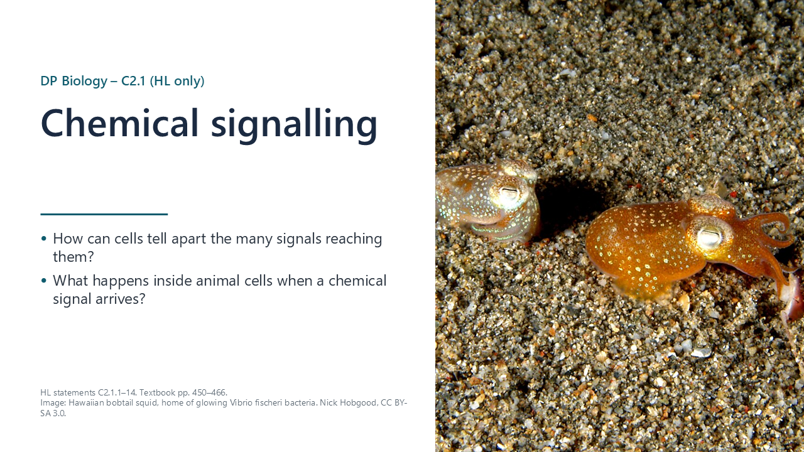
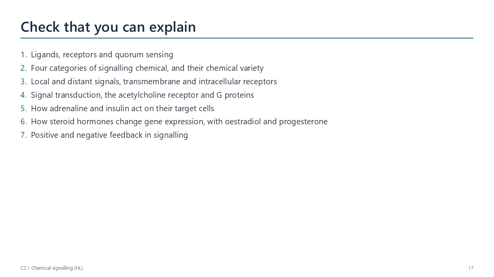
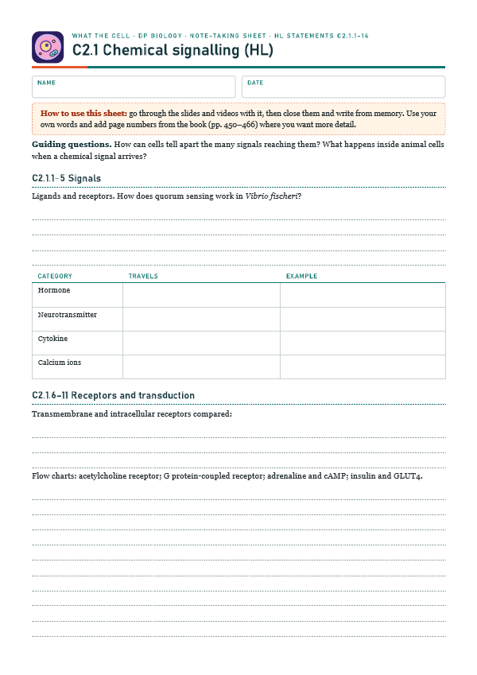
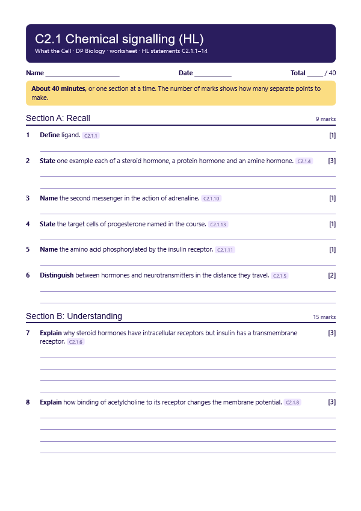

Receptors and ligands
pp. 450–451A ligand is a signalling chemical; a receptor is a protein with a binding site that fits one ligand. Binding changes the receptor’s shape and starts a response, so only cells with the right receptor respond.

Written for this site from the class slides, with textbook page references for each statement. The chapter is on pages 450–466 of the course textbook. Image credits are on slide 27.
A ligand is a signalling chemical; a receptor is a protein with a binding site that fits one ligand. Binding changes the receptor’s shape and starts a response, so only cells with the right receptor respond.
Bacteria release an autoinducer. At high cell density it passes a threshold, binds receptors and switches on genes in all the cells. Vibrio fischeri in the bobtail squid’s light organ switches on luciferase genes and glows only when the population is dense.
Hormones travel in the blood; neurotransmitters cross synapses; cytokines act on nearby cells, often in immunity; calcium ions act inside cells, for example triggering muscle contraction.
Hormones may be amines (adrenaline), proteins (insulin) or steroids (oestradiol). Neurotransmitters include amino acids, peptides, amines and the gas nitric oxide. Each receptor needs a distinct shape, and different chemistry suits different jobs.
Neurotransmitters act across a gap of about 20 nm within milliseconds; hormones travel round the body in the blood and act on every cell with the right receptor, often for hours.
Hydrophilic ligands bind transmembrane receptors, which have hydrophobic amino acids where they cross the membrane. Hydrophobic ligands such as steroids diffuse into the cell and bind intracellular receptors, which are mostly hydrophilic.
Binding of a ligand starts a signal transduction pathway: a sequence of changes inside the cell that passes on and amplifies the signal, ending in a response.
Acetylcholine binds a receptor that is also an ion channel. The channel opens, positive ions (mainly Na+) diffuse in and the membrane depolarizes, which may start an impulse.
A ligand binding outside changes the receptor’s shape; the G protein inside swaps GDP for GTP and activates an enzyme or channel. Humans have hundreds of these receptors.

Adrenaline binds a G protein-coupled receptor; the G protein activates adenylyl cyclase, which makes cAMP, the second messenger. cAMP activates protein kinase A and a cascade that breaks down glycogen, amplifying the signal many times.
Insulin binds a receptor that phosphorylates tyrosine inside the cell. A chain of reactions moves vesicles carrying GLUT4 transporters to the membrane, so more glucose enters the cell.
Oestradiol, progesterone and testosterone diffuse into cells and bind receptors there. The activated receptor binds specific DNA sequences and switches on transcription of target genes.
Oestradiol acts on cells in the hypothalamus that secrete GnRH, changing its release. Progesterone acts on cells of the endometrium, keeping the lining thick and ready for an embryo.
Negative feedback reduces the signal and keeps a variable stable (insulin lowering blood glucose). Positive feedback increases it and drives a rapid change (an autoinducer switching on its own production).
Select a video to play it here. Select it again to close it.
Print this guide and complete it as you work through the slides and videos. It asks for your own explanations, so close the notes while you try each section.

The self-check needs JavaScript to run.
A printable worksheet covering all fourteen statements, from quick recall to data questions and a longer answer. It has 40 marks and takes about 40 minutes, or you can do one section at a time.
Your teacher has the mark scheme.

You will need: Dominoes or students with counters, large sheet of paper
Safety: No practical hazards.
Carry this out with your teacher's supervision and follow your school's lab rules.
Earl Sutherland's work on epinephrine in the 1950s revealed second messengers, showing how a signal outside a cell can act inside it.
We describe signalling using messengers and receptors. Consider what these human images add, and what they might hide.
Summarised in our own words. Use each code to find the exact wording in your textbook or the IB subject guide.
© 2026 Akash Parthi Bendran. Please ask before using or sharing any resources from this site: see permission to use.